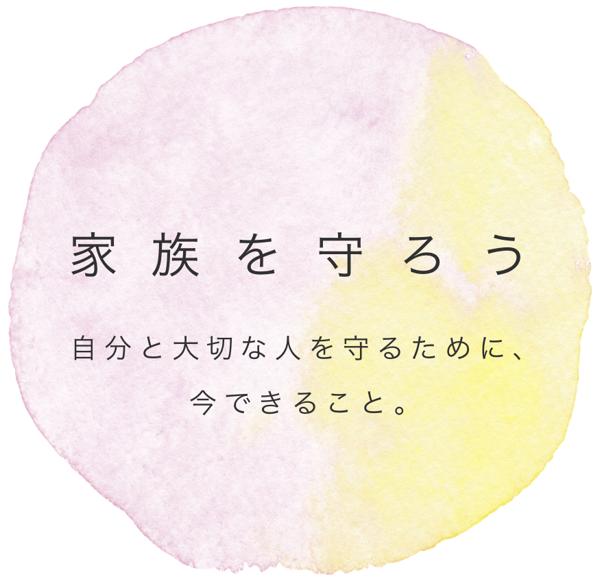
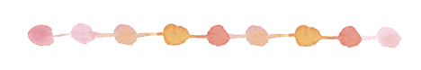

<div class="p-grid p-justify-center">
  <div class="p-lg-4 p-md-6 p-sm-8 p-col-12">
    <div class="p-grid p-dir-col" style="background-color: aqua">
      <div class="p-col p-grid p-justify-center"></div>
      <div class="p-col">
        <p>私たちは遠く離れて暮らしているあなたを心配しています。気をつけるだけでなく、具体的に何をすべきか私たちの経験を元にまとめました。</p>
        <p>「やりすぎくらい」でもいいです。</p>
        <p>また笑顔でみんなに会えることを願って、このサイトをあなたに届けます。</p>
      </div>
      <div class="p-col p-grid p-justify-center"></div>
      <div class="p-col">
        <p>外出するとき、仕事に行くとき、人と会うとき。シチュエーションに合わせたコロナウイルスの予防をまとめましたので、普段の行動を振り返りながらチェックしてください。</p>
      </div>
      <div class="p-col p-grid p-justify-center"></div>
      <div class="p-col">
        <h5>目次</h5>
        <ol>
          <li>買い物に行く</li>
          <li>高齢の家族に会う</li>
          <li>ストレスを抱える前に</li>
          <li>仕事に行く</li>
          <li>車・電車を使う</li>
        </ol>
      </div>
      <div class="p-col p-grid p-justify-center"></div>
      <div class="p-col">contents</div>
    </div>
  </div>
</div>
